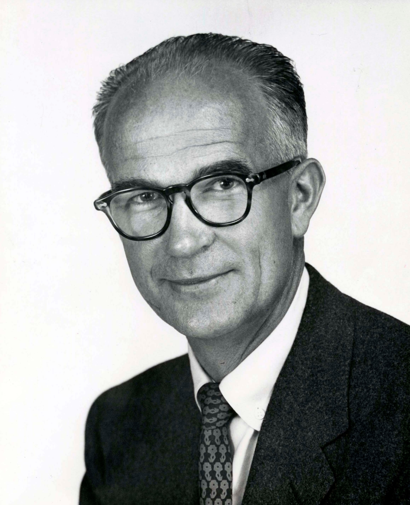
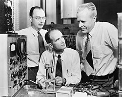

// Biografía
Shockley (13 de febrero de 1910 – 12 de agosto de 1989) fue un físico estadounidense. En conjunto con John Bardeen y Walter Houser Brattain, obtuvo el Premio Nobel de Física en 1956 «por sus investigaciones sobre semiconductores y la invención del transistor».
En 1955, Shockley abandonó los laboratorios Bell y regresó a su ciudad natal, Palo Alto, California, para crear Shockley Semiconductors Laboratory, con el apoyo económico de Arnold Beckman. Dado su estilo empresarial, ocho de los investigadores abandonaron la compañía en 1957 para formar Fairchild Semiconductor. Entre ellos estaban Robert Noyce y Gordon Moore, quienes más tarde crearían Intel.

// Carrera
Shockley fue uno de los primeros reclutas de los Laboratorios Bell por parte de Mervin Kelly, quien se centró en la contratación de físicos del estado sólido. Shockley se unió a un grupo dirigido por Clinton Davisson en Murray Hill, Nueva Jersey. Los ejecutivos de Bell habían teorizado que los semiconductores podrían ofrecer alternativas de estado sólido a los tubos de vacío del sistema telefónico.
Shockley publicó varios artículos fundamentales sobre física del estado sólido en Physical Review. En 1938 recibió su primera patente, "Electron Discharge Device", sobre multiplicador de electrones.
Al estallar la Segunda Guerra Mundial se dedicó a la investigación del radar en Manhattan. En mayo de 1942 se convirtió en director de investigación en el Grupo de Operaciones de Guerra Antisubmarina de la Universidad de Columbia.

En 1944 organizó un programa de entrenamiento para pilotos de bombarderos B-29. El Secretario de Guerra Robert Patterson concedió a Shockley la Medalla al Mérito el 17 de octubre de 1946. Un informe de Shockley sobre las bajas probables en Japón influyó directamente en la decisión de lanzar bombas atómicas sobre Hiroshima y Nagasaki.
// La Carrera por el Transistor
Durante 1946-1947, dos miembros del grupo — John Bardeen y Walter Brattain — desarrollaron una actividad febril durante el verano y el otoño sin el concurso de Shockley. El 16 de diciembre de 1947 lograron hacer funcionar un amplificador empleando un transistor fabricado con germanio. El día 23 mostraron sus resultados a los directivos del laboratorio.
Al enterarse del éxito, Shockley concibió un transistor diferente al de puntas de contacto, denominado transistor de unión (patente US 2,569,347), presentado el 23 de enero de 1948.
// Legado
En 1956, William Bradford Shockley recibió el Premio Nobel de Física, junto a John Bardeen y Walter Houser Brattain, por sus trabajos sobre semiconductores. A lo largo de su vida recibió numerosos honores y reconocimientos, entre ellos la Medalla al Mérito del Ministerio de Defensa (1946), el Premio Morris Liebmann (1952), el Premio Oliver E. Buckley (1953), y la Medalla Wilhelm Exner (1963).
Durante sus últimos años, Shockley se dedicó a promover su controvertida teoría de la 'disgenia', que empañó en alguna medida su extraordinaria contribución al estudio y desarrollo de los semiconductores. Falleció en Palo Alto, California, el 12 de agosto de 1989, a consecuencia de un cáncer de próstata.